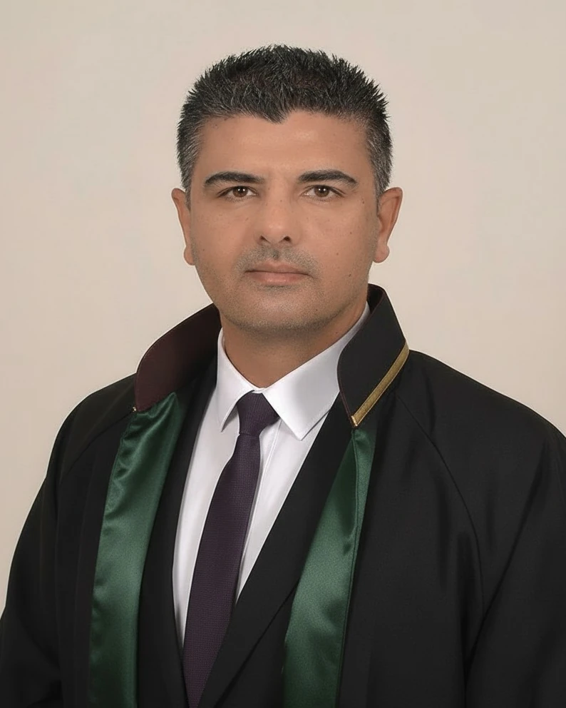

ANTALYA · TÜRKİYE
Avukat Yasin Dedeli
Hukuk · Danışmanlık · Arabuluculuk
İletişim bilgileriFAALİYETLER
Mesleki faaliyetler.
Hukuki konular, ilgili mevzuat ve sunulan belgeler çerçevesinde değerlendirilmekte; hak ve yükümlülükler hakkında hukuki görüş verilmekte, başvurulabilecek hukuki yollar konusunda bilgilendirme yapılmaktadır.
Taraflar arasındaki hukuki ilişkilerin kurulması, devamı veya sona erdirilmesi kapsamında gerekli sözleşme ve sair belge içeriklerinin düzenlenmesi veya önceden hazırlanmış olan metinlerin hukuki denetimden geçirilmesi noktasında danışmanlık hizmeti vermekteyiz.
Büromuzda ağırlıklı olarak hukuk ve ceza davaları ile icra dosyaları takip edilmektedir.
Bu kapsamda kat karşılığı inşaat, taşeronluk, satış vaadi, alım-satım, tapu iptali ve tescil, ortaklığın giderilmesi, ticari davalar, icra takipleri, icra hukukundan doğan her türlü dava, iş davaları, yabancılar hukuku, trafik ve iş kazalarından kaynaklı tazminat davaları ile diğer tazminat davaları yer almaktadır.
Sigorta, gayrimenkul, kira, sözleşme, bankacılık, enerji, petrol, aile ve şirketler hukuku da faaliyet alanları arasındadır.
2022 yılından itibaren Ticaret, İş ve Kira Hukuku alanında uzman arabulucu sıfatıyla Antalya Arabuluculuk Bürosuna bağlı olarak zorunlu ve ihtiyari arabuluculuk hizmetleri verilmektedir.
Arabuluculuk faaliyetinde, uzun ve tarafları maddi külfete sokan yorucu yargısal süreçlere maruz kalmadan, uyuşmazlıkların dostane, kısa vadede ve daha az masrafla çözümü hususunda tarafların anlaşmaya varması amaçlanmaktadır.
Arabuluculuk; tarafların uyuşmazlığı müzakere ederek kendi çözümlerini oluşturmasına yardımcı olan, tarafsız ve bağımsız bir üçüncü kişinin katılımıyla yürütülen bir süreçtir. Görüşmelerde gizlilik ve tarafların eşitliği esas alınır. Arabulucu, uyuşmazlık hakkında hâkim gibi karar vermez; anlaşma sağlanıp sağlanmayacağına taraflar karar verir.

HAKKIMDA
Avukat Yasin Dedeli
Eskişehir Anadolu Üniversitesi Hukuk Fakültesi 2006 yılı mezunudur. 2007 yılından itibaren Antalya Barosu’na bağlı olarak serbest avukatlık yapmaktadır.
01.02.2010 tarihinden itibaren Yasin Dedeli Avukatlık Bürosu olarak faaliyetine başlamıştır.
Avukatlık mesleğinin yanı sıra, 2022 yılından itibaren Ticaret, İş ve Kira Hukuku alanında uzman arabulucu sıfatıyla Antalya Arabuluculuk Bürosuna bağlı olarak zorunlu ve ihtiyari arabuluculuk faaliyetlerini yürütmektedir.
Çalışma prensiplerimiz
- Uyuşmazlıklar ortaya çıkmadan önceki süreçte önleyici hukuk denetimi ve danışmanlık hizmeti vermektir.
- Uyuşmazlık ortaya çıktıktan sonraki süreçte ise sağlıklı ve kısa vadeli çözüm yöntemleri konusunda danışmanlık hizmeti vermektir.
- Kayıtlı olduğu baro
- Antalya Barosu
- Baro sicil numarası
- 2727
- Faaliyet yeri
- Antalya, Türkiye
İLETİŞİM
Avukat Yasin Dedeli
Soğuksu Mah. Toroslar Cad. Office 12 No:62 K:2 D:4 Muratpaşa/Antalya
Soğuksu Mah. Toroslar Cad. Office 12 No:62 K:2 D:4 Muratpaşa/Antalya